Hubungi +62 878 7771 7603
Profil Perusahaan
Media
Kegiatan
Berita
Produk Kami
Kontak
Kontak
Gong Factory Bogor Since 1820
Wilujeng Sumping
Hubungi Kami Untuk Kunjungan dan Info Selengkapnya
Gong Factory Bogor
Email: gongfactorybogor@gmail.com
No. Telpon: +62 878-7771-7603
Alamat : Jl. Pancasan No.17 RT.02/RW.07 Pasar Jaya, Kec. Bogor Barat, Kota Bogor 16119